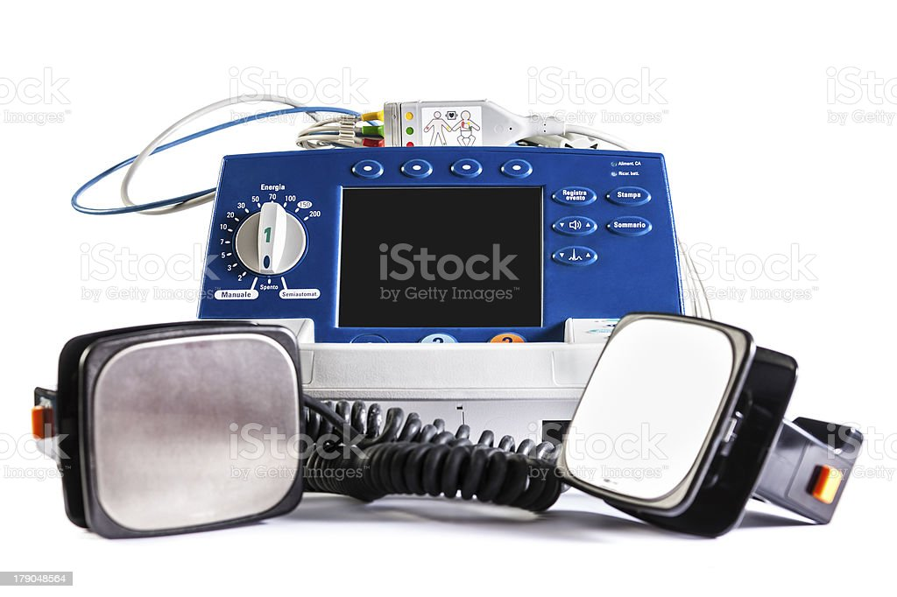
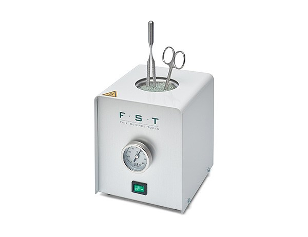
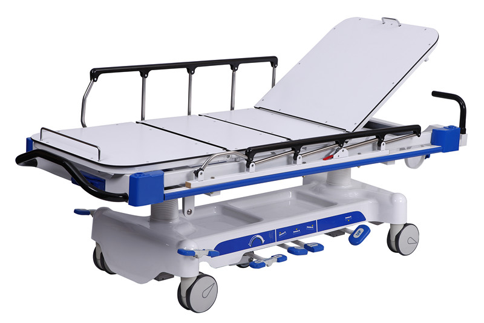
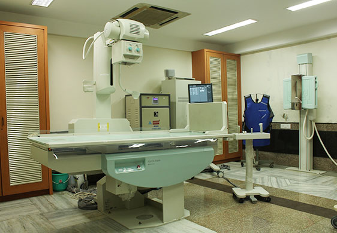

SERVICE
Services of Technology
- Hospital Stretchers
- Transporting patients is very important when dealing with emergencies. Hospitals should have this device on hand as patients walk through their care.
- Defibrillators
- Commonly used in life-threatening conditions such as heart rhythm or tachycardia, the defibrillator restores a normal heart rhythm. They are essential tools that a hospital always needs to back up.
- Anesthesia machines
- Anesthesia machines are designed to accurately and continuously supply medical gases to a patient to maintain a proper level of anesthesia. Modern anesthesiologists include additional equipment such as a ventilator, suction unit, and patient monitoring equipment.
- Sterilizers
- Hospital disinfectants kill all microorganisms, including fungi, bacteria, viruses, spores, and all other contaminants in surgical instruments and other medical materials. An automatic claw disinfects equipment and supplies using high-pressure saturated steam for short periods of time.
- EKG/ECG Machines
- Electrocardiogram (EKG) machines record the cardiac electrical activity over a period of time, allowing health care providers to monitor the overall rhythm of the heart and detect any abnormalities.
- Blanket and Fluid Warmers
- Heaters Body temperature that is not maintained during surgery can lead to postoperative complications, such as perioperative hypothermia, prolonged hospitalization and recovery, and increased risk of infection. That is why it is essential for hospitals to have Blanket Warmer and Flood Warmer.
| Name | Stretchers | Defibrillators | Sterilizers | SEKG/ECG Machines |
| Picture |  |  |  |  | |